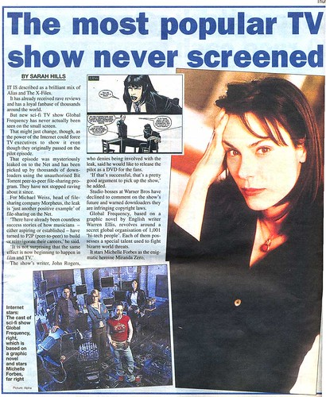
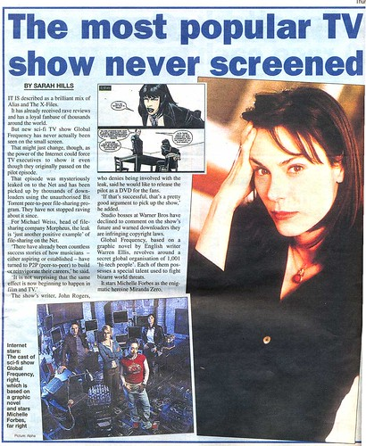

https://vids.myspace.com/index.cfm?fuseaction=vids.individual&videoid=5056593
I really enjoyed this unaired pilot.


https://vids.myspace.com/index.cfm?fuseaction=vids.individual&videoid=5056593
I really enjoyed this unaired pilot.
WTF is this shit?
Comic book was going to made in to a tv series, but it was canned. This is the leaked pilot. Will watch tonight.
It looks like fringe if it lacked the fringe science that actually makes the show cool to begin with. It also sounds like a giant cellphone commercial. Even if the main actor is the voice of Mossman.
The phones are really out of date, but the fact still reminds, the show had a lot of potential
Remains. “The fact remains”.
Well excuse me for not being the grammar king of the tubes.
It’s not an issue of grammar, I’m just pointing out an obvious malapropism. Or eggcorn. Might be an eggcorn. I’ve never really been clear on the difference.
Founded in 2004, Leakfree.org became one of the first online communities dedicated to Valve’s Source engine development. It is more famously known for the formation of Black Mesa: Source under the 'Leakfree Modification Team' handle in September 2004.